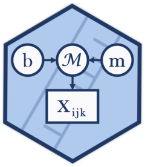
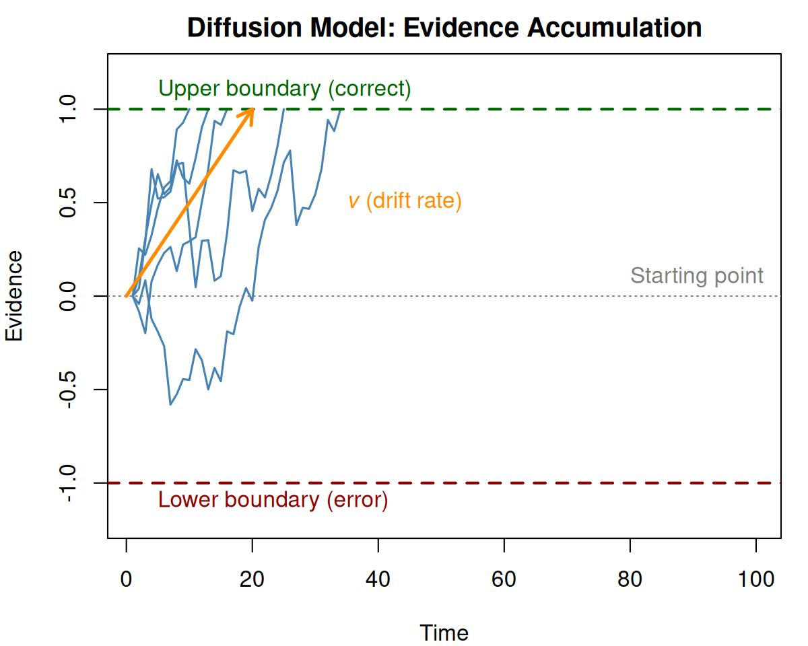
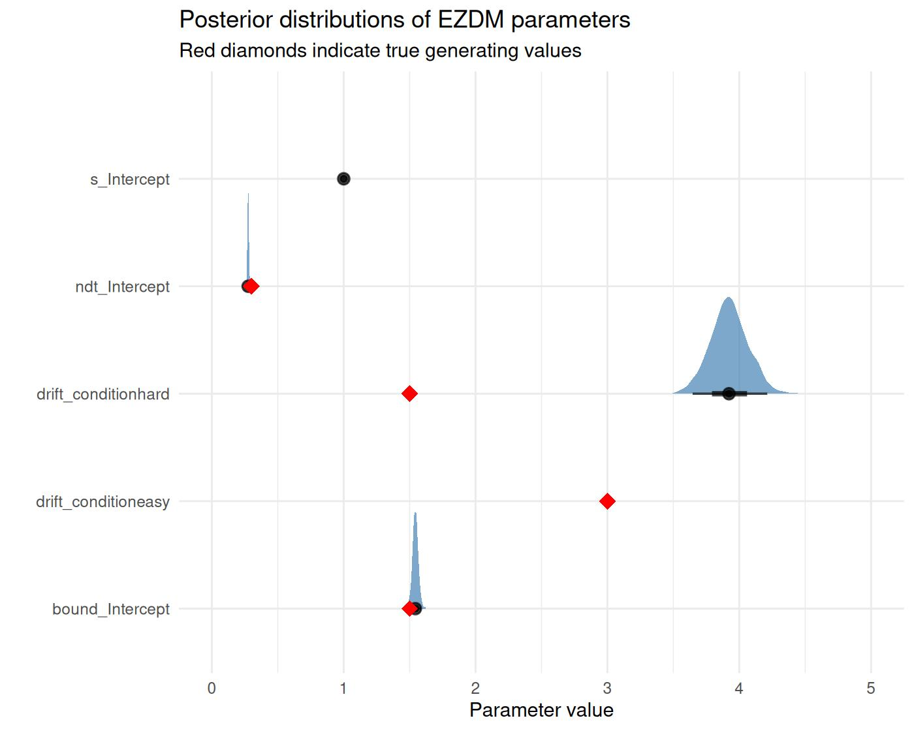

The EZ-Diffusion Model (EZDM)
Gidon Frischkorn
Ven Popov
Source:vignettes/articles/bmm_ezdm.Rmd
bmm_ezdm.Rmd1 Introduction to the model
The diffusion model (Ratcliff 1978) is a widely used model in speeded decision-making. It describes how participants accumulate noisy evidence over time until reaching one of two decision boundaries. Usually, the diffusion model is fit to trial-level reaction time distributions, which can be computationally intensive, especially for hierarchical Bayesian estimation.
The EZ-Diffusion Model (Wagenmakers, Van Der Maas, and Grasman 2007) provides a simplified alternative building on closed-form equations that relate the parameters of the diffusion model to easily computed summary statistics: mean reaction time (MRT), reaction time variance (VRT), and accuracy (proportion correct, Pc). This makes it possible to calculate diffusion model parameters from aggregated data without fitting to individual trials.
1.1 The Diffusion Model
In the standard diffusion model, evidence accumulates from a starting point toward one of two boundaries. The key parameters are:
- Drift rate (\(v\)): The average rate of evidence accumulation, reflecting task difficulty or ability
- Boundary separation (\(a\)): The distance between the two decision boundaries, reflecting the speed-accuracy tradeoff
- Non-decision time (\(T_{er}\)): Time for processes outside the decision (encoding, motor response)
- Starting point (\(z\)): A response bias indicating where evidence accumulation begins relative to the boundaries

Figure 1.1: Illustration of the diffusion model. Evidence accumulates from the starting point until reaching the upper (correct) or lower (error) boundary.
1.2 The EZ Equations
Wagenmakers, Van Der Maas, and Grasman (2007) provided closed-form solutions relating the diffusion model parameters to observable summary statistics. For the 3-parameter version (assuming symmetric starting point, \(z = a/2\)):
Given the proportion correct (\(P_c\)), mean RT of correct responses (\(MRT\)), and variance of correct RTs (\(VRT\)), the parameters can be computed as:
\[ v = \text{sign}(P_c - 0.5) \cdot s \cdot \left[ L(P_c) \cdot \frac{P_c^2 L(P_c) - P_c \cdot L(P_c) + P_c - 0.5}{VRT} \right]^{1/4} \]
\[ a = s^2 \cdot \frac{L(P_c)}{v} \]
\[ T_{er} = MRT - \frac{a}{2v} \cdot \frac{1 - e^{-\frac{va}{s^2}}}{1 + e^{-\frac{va}{s^2}}} \]
where \(L(P_c) = \ln\left(\frac{P_c}{1 - P_c}\right)\) is the logit function and \(s\) is the diffusion constant (typically fixed to 1 for identification).
1.3 The 4-Parameter Extension
The original EZ model assumes a symmetric starting point. Srivastava, Holmes, and Simen (2016) derived the moments of first-passage times for the Wiener diffusion process with arbitrary starting points, enabling a 4-parameter version that can estimate starting point bias (\(z_r\), the relative starting point). This 4-parameter version, however, requires separate summary statistics for responses to each boundary:
- Mean and variance of RTs for upper boundary responses (typically correct)
- Mean and variance of RTs for lower boundary responses (typically errors)
With sufficient responses at both the upper and lower bound, this allows estimation of response bias, which is important when participants favor one response over another.
1.4 Bayesian Estimation
So far, studies using the EZ-Diffusion model have adopted step-wise analyses approaches. First, diffusion model parameters are calculated for summary statistics for each individual in each design cell. Second, the calculated parameters are submitted to statistical tests evaluating differences between experimental conditions. This approach has two downsides: 1) uncertainty in parameter estimation is not sufficiently propagated between analysis steps, and 2) all parameters of the diffusion model were allowed to vary over all design cells, bearing the risk of over fitting. To address these issues, Chávez De la Peña and Vandekerckhove (2025) introduced a Bayesian hierarchical approach to the EZ-diffusion model. This approach combines the derivation of summary statistics from diffusion model parameters with a probabilistic model of the sampling distributions of the summary statistics. Specifically, this approach:
- Treats the summary statistics as observed data generated from a known sampling distribution
- Uses likelihood-based inference to estimate parameters with proper uncertainty quantification
- Enables hierarchical modeling with random effects across participants
Chávez De la Peña and Vandekerckhove (2025) shared JAGS code alongside their model. The downside of this implementation is that the model code has to be adapted to different experimental designs which likely leads to errors and increases the bar for using the implementation. The bmm package implements this Bayesian approach, allowing researchers to:
- Estimate uncertainty in parameter estimates
- Include random effects for participants
- Compare conditions using Bayesian hypothesis testing
- Leverage the full power of the
brmsmodeling framework
2 Parametrization in the bmm package
The bmm package implements two versions of the EZ-diffusion model:
2.1 3-Parameter Version (version = "3par")
Estimates three parameters with a fixed symmetric starting point (\(z_r = 0.5\)):
| Parameter | Description | Link Function |
|---|---|---|
drift |
Drift rate (\(v\)) - rate of evidence accumulation | identity |
bound |
Boundary separation (\(a\)) - response caution | log |
ndt |
Non-decision time (\(T_{er}\)) - encoding + motor time | log |
The diffusion constant s is fixed to 1 for identification.
2.2 4-Parameter Version (version = "4par")
Adds estimation of starting point bias:
| Parameter | Description | Link Function |
|---|---|---|
drift |
Drift rate (\(v\)) | identity |
bound |
Boundary separation (\(a\)) | log |
ndt |
Non-decision time (\(T_{er}\)) | log |
zr |
Relative starting point (0-1 scale) | logit |
Note that zr = 0.5 indicates no bias (symmetric starting point), zr > 0.5 indicates bias toward the upper boundary, and zr < 0.5 indicates bias toward the lower boundary.
3 Data requirements
Unlike other models in bmm that work with trial-level data, the EZ-diffusion model requires aggregated summary statistics:
| Variable | Description |
|---|---|
mean_rt |
Mean reaction time (in seconds) |
var_rt |
Variance of reaction times |
n_upper |
Number of responses hitting the upper boundary |
n_trials |
Total number of trials |
For the 3-parameter version, mean_rt and var_rt should be computed from all correct responses pooled together.
For the 4-parameter version, you need separate statistics for upper and lower boundary responses:
- mean_rt_upper, var_rt_upper for upper boundary (correct) responses
- mean_rt_lower, var_rt_lower for lower boundary (error) responses
4 Preparing data with ezdm_summary_stats()
The bmm package provides the ezdm_summary_stats() function to compute the required aggregated statistics from trial-level RT data in the correct format. RT contaminants (fast guesses, lapses, attentional failures) can severely distort mean and variance estimates, leading to biased parameter estimates (Wagenmakers et al. 2008). The function offers three methods to address this:
| Method | Description | Use when |
|---|---|---|
"simple" |
Standard mean/variance | Data is pre-cleaned |
"robust" |
Median + IQR/MAD-based variance | Moderate contamination |
"mixture" |
EM mixture modeling (default) | General use; provides contamination estimates |
For detailed coverage of RT contamination handling, including mixture model theory, distribution options, contaminant bounds, and diagnostics, see vignette("bmm_rt_contamination").
4.1 Example with Simulated Data
To illustrate the impact of contamination, we generate trial-level data with known parameters and introduce 5% contaminant trials:
library(bmm)
library(rtdists)
library(dplyr)
set.seed(42)
# Generate clean trial-level data with known parameters
n_trials <- 200
true_drift <- 2.5
true_bound <- 1.2
true_ndt <- 0.25
# Simulate diffusion process
trials_clean <- rdiffusion(
n = n_trials,
a = true_bound,
v = true_drift,
t0 = true_ndt,
z = 0.5 * true_bound
)
# Add contaminants (5% fast guesses and lapses)
n_contaminants <- round(n_trials * 0.05)
contaminant_idx <- sample(n_trials, n_contaminants)
trials_contaminated <- trials_clean
trials_contaminated$rt[contaminant_idx] <- runif(n_contaminants, 0.1, 3)
trials_contaminated$response[contaminant_idx] <- sample(c("upper", "lower"),
n_contaminants,
replace = TRUE)
trials_contaminated <- trials_contaminated |>
mutate(
correct = as.numeric(response == "upper"),
subject = 1,
condition = "standard"
)We can now compare the three methods. The function takes rt and response as vectors. For grouped operations, use dplyr::group_by() with reframe():
summary_simple <- ezdm_summary_stats(
trials_contaminated$rt, trials_contaminated$correct,
method = "simple", version = "3par"
)
summary_robust <- ezdm_summary_stats(
trials_contaminated$rt, trials_contaminated$correct,
method = "robust", version = "3par"
)
summary_mixture <- ezdm_summary_stats(
trials_contaminated$rt, trials_contaminated$correct,
method = "mixture", version = "3par"
)
comparison <- data.frame(
Method = c("Simple", "Robust", "Mixture", "TRUE"),
Mean_RT = c(
summary_simple$mean_rt,
summary_robust$mean_rt,
summary_mixture$mean_rt,
mean(trials_clean$rt[trials_clean$response == "upper"])
),
Var_RT = c(
summary_simple$var_rt,
summary_robust$var_rt,
summary_mixture$var_rt,
var(trials_clean$rt[trials_clean$response == "upper"])
),
Contaminant = c(NA, NA, summary_mixture$contaminant_prop, 0.05)
)
print(comparison)
#> Method Mean_RT Var_RT Contaminant
#> 1 Simple 0.5409176 0.10605857 NA
#> 2 Robust 0.4568634 0.02440439 NA
#> 3 Mixture 0.4962307 0.03633472 0.03539257
#> 4 TRUE 0.4755037 0.02050638 0.05000000The mixture method identifies contaminants and provides more accurate moment estimates.
4.2 Accuracy Adjustment
When using the mixture method, the adjust_ezdm_accuracy() function can adjust accuracy counts by removing estimated contaminants. This assumes contaminants are random guesses (50% accuracy by default) and is applied as a separate step after computing summary statistics:
summary_no_adjust <- ezdm_summary_stats(
trials_contaminated$rt, trials_contaminated$correct, version = "3par"
)
summary_adjust <- ezdm_summary_stats(
trials_contaminated$rt, trials_contaminated$correct, version = "3par"
) |>
mutate(adjust_ezdm_accuracy(n_upper, n_trials, contaminant_prop))
cat("Unadjusted accuracy:",
round(summary_no_adjust$n_upper / summary_no_adjust$n_trials, 3), "\n")
#> Unadjusted accuracy: 0.93
cat("Adjusted accuracy:",
round(summary_adjust$n_upper_adj / summary_adjust$n_trials_adj, 3), "\n")
#> Adjusted accuracy: 0.948
cat("True accuracy (no contaminants):",
round(mean(trials_clean$response == "upper"), 3), "\n")
#> True accuracy (no contaminants): 0.9454.3 Working with the 4-Parameter Version
The 4-parameter version estimates starting point bias (zr) and requires separate statistics for upper and lower boundary responses:
# Generate data with response bias (zr = 0.6, favoring upper boundary)
trials_biased <- rdiffusion(
n = 200,
a = 1.2,
v = 2.0,
t0 = 0.25,
z = 0.7 * 1.2
)
trials_biased <- trials_biased |>
mutate(
correct = as.numeric(response == "upper"),
subject = 1
)
# Compute summary statistics for 4-parameter model
summary_4par <- ezdm_summary_stats(
trials_biased$rt, trials_biased$correct, version = "4par"
)
summary_4par
#> mean_rt_upper mean_rt_lower var_rt_upper var_rt_lower n_upper n_trials
#> mu 0.3943676 NA 0.01611958 NA 195 200
#> contaminant_prop_upper contaminant_prop_lower
#> mu 0.01217136 NANotice the output now includes:
- mean_rt_upper, var_rt_upper: Statistics for upper boundary responses
- mean_rt_lower, var_rt_lower: Statistics for lower boundary responses
This format is required for fitting the 4-parameter EZ-DM model.
4.4 Complete Workflow: From Trial-Level to Model Fitting
Here’s the complete pipeline from trial-level data to parameter estimation:
# Step 1: Generate or load trial-level data
trial_data <- rdiffusion(
n = 100 * 20, # 20 subjects, 100 trials each
a = 1.5, v = 2.5, t0 = 0.3, z = 0.75
) |>
mutate(
subject = rep(1:20, each = 100),
correct = as.numeric(response == "upper")
)
# Step 2: Compute summary statistics with robust estimation
summary_data <- trial_data |>
group_by(subject) |>
reframe(ezdm_summary_stats(
rt, correct,
method = "mixture", distribution = "exgaussian", version = "3par"
))
# Step 3: Inspect contaminant proportions (quality control)
summary(summary_data$contaminant_prop)
# Step 4: Fit model with bmm
model <- ezdm("mean_rt", "var_rt", "n_upper", "n_trials", version = "3par")
formula <- bmf(drift ~ 1, bound ~ 1, ndt ~ 1)
fit <- bmm(
formula = formula,
data = summary_data,
model = model,
backend = "cmdstanr"
)
# Step 5: Examine results
summary(fit)This workflow ensures robust parameter estimation by properly handling RT contaminants throughout the analysis pipeline.
5 Fitting the model with bmm
We start by loading the bmm package:
5.1 Generating simulated data
For illustration, we will generate simulated data with known parameters using the rezdm() function. As for all other models, bmm provides a density and random generation function for all implemented models. In the case of the ezdm there is no single dependent variable for the density function, which makes efficient illustration challenging. However, the rezdm function allows for evaluating parameter recovery simulations and predicitions based on the ezdm.
set.seed(123)
# Define true parameters for two conditions
true_params <- data.frame(
condition = c("easy", "hard"),
drift = c(3.0, 1.5),
bound = c(1.5, 1.5),
ndt = c(0.3, 0.3)
)
# Number of subjects and trials per condition
n_subjects <- 20
n_trials <- 100
# Generate data
sim_data <- data.frame()
for (subj in 1:n_subjects) {
for (cond in 1:2) {
# Add some random variation for each subject
drift_subj <- true_params$drift[cond] + rnorm(1, 0, 0.3)
bound_subj <- true_params$bound[cond] + rnorm(1, 0, 0.1)
ndt_subj <- true_params$ndt[cond] + rnorm(1, 0, 0.02)
# Generate summary statistics
stats <- rezdm(
n = 1,
n_trials = n_trials,
drift = max(drift_subj, 0.1),
bound = max(bound_subj, 0.5),
ndt = max(ndt_subj, 0.1),
version = "3par"
)
stats$subject <- subj
stats$condition <- true_params$condition[cond]
sim_data <- rbind(sim_data, stats)
}
}
# Convert condition to factor
sim_data$condition <- factor(sim_data$condition, levels = c("easy", "hard"))
head(sim_data)
#> mean_rt var_rt n_upper n_trials subject condition
#> 1 0.5821563 0.03227199 99 100 1 easy
#> 2 0.7580137 0.09254939 95 100 1 hard
#> 3 0.5170452 0.01770436 100 100 2 easy
#> 4 0.7777224 0.16780351 85 100 2 hard
#> 5 0.4981635 0.02285722 97 100 3 easy
#> 6 0.6836707 0.06894347 93 100 3 hard5.2 Specifying the formula
Next, we specify the model formula using bmmformula() (or bmf()). For this example, we want to estimate separate drift rates for each condition while keeping boundary and non-decision time constant:
model_formula <- bmf(
drift ~ 0 + condition,
bound ~ 1,
ndt ~ 1
)5.3 Specifying the model
Next, we specify the bmmodelobject for the EZDM model by calling ezdm and passing the respective variable names from our dataset:
model <- ezdm(
mean_rt = "mean_rt",
var_rt = "var_rt",
n_upper = "n_upper",
n_trials = "n_trials",
version = "3par"
)As for all other bmmodel this provides the necessary information for bmm to properly set up the model for estimation.
5.4 Fitting the model
Now we can fit the model using bmm():
fit <- bmm(
formula = model_formula,
data = sim_data,
model = model,
cores = 4,
backend = "cmdstanr",
file = "assets/bmmfit_ezdm_vignette"
)5.5 Inspecting results
First, check the model summary:
Model: ezdm(mean_rt = "mean_rt",
var_rt = "var_rt",
n_upper = "n_upper",
n_trials = "n_trials",
version = "3par")
Links: drift = log; bound = log; ndt = log; s = log
Formula: drift ~ 0 + condition
bound ~ 1
ndt ~ 1
s = 0
Data: sim_data (Number of observations: 40)
Draws: 4 chains, each with iter = 1000; warmup = 500; thin = 1;
total post-warmup draws = 2000
Regression Coefficients:
Estimate Est.Error l-95% CI u-95% CI Rhat Bulk_ESS Tail_ESS
bound_Intercept 0.43 0.01 0.41 0.45 1.00 1028 1329
ndt_Intercept -1.26 0.02 -1.30 -1.23 1.00 1487 1256
drift_conditioneasy 1.12 0.01 1.09 1.14 1.00 1455 1466
drift_conditionhard 0.38 0.02 0.34 0.43 1.00 1145 1217
Constant Parameters:
Value
s_Intercept 0.00
Draws were sampled using sample(hmc). For each parameter, Bulk_ESS
and Tail_ESS are effective sample size measures, and Rhat is the potential
scale reduction factor on split chains (at convergence, Rhat = 1).
To provide stable sampling all parameters use log link functions, so we need to exponentiate to get estimates on the natural scale:
# Extract fixed effects
fixef_est <- brms::fixef(fit)
# Transform to natural scale
cat("Drift rate (easy):", exp(fixef_est["drift_conditioneasy", "Estimate"]), "\n")
#> Drift rate (easy): 3.060362
cat("Drift rate (hard):", exp(fixef_est["drift_conditionhard", "Estimate"]), "\n")
#> Drift rate (hard): 1.467012
cat("Boundary:", exp(fixef_est["bound_Intercept", "Estimate"]), "\n")
#> Boundary: 1.534783
cat("Non-decision time:", exp(fixef_est["ndt_Intercept", "Estimate"]), "\n")
#> Non-decision time: 0.2827719As you can see, these match the generating values well:
print(true_params)
#> condition drift bound ndt
#> 1 easy 3.0 1.5 0.3
#> 2 hard 1.5 1.5 0.35.6 Visualizing posterior distributions
library(tidybayes)
library(dplyr)
library(tidyr)
library(ggplot2)
# Extract posterior draws
draws <- tidybayes::tidy_draws(fit) |>
select(starts_with("b_")) |>
mutate(across(everything(), exp))
# Rename for plotting
colnames(draws) <- gsub("b_", "", colnames(draws))
# True values for comparison
true_vals <- data.frame(
par = c("drift_conditioneasy", "drift_conditionhard", "bound_Intercept", "ndt_Intercept"),
value = c(3.0, 1.5, 1.5, 0.3)
)
# Plot
draws |>
pivot_longer(everything(), names_to = "par", values_to = "value") |>
filter(par != "Intercept") |>
ggplot(aes(x = value, y = par)) +
stat_halfeye(normalize = "groups", fill = "steelblue", alpha = 0.7) +
geom_point(data = true_vals, aes(x = value, y = par),
color = "red", shape = 18, size = 4) +
labs(x = "Parameter value", y = "",
title = "Posterior distributions of EZDM parameters",
subtitle = "Red diamonds indicate true generating values") +
coord_cartesian(xlim = c(0,5)) +
theme_minimal()
6 Comparing conditions
As bmm feeds seamlessly into brms, we can use Bayesian hypothesis testing via Savage-Dickey density ratios to compare drift rates between conditions:
# Test if drift rate is higher in easy vs hard condition
brms::hypothesis(fit, "exp(drift_conditioneasy) > exp(drift_conditionhard)")
#> Hypothesis Tests for class b:
#> Hypothesis Estimate Est.Error CI.Lower CI.Upper Evid.Ratio
#> 1 (exp(drift_condit... > 0 1.59 0.04 1.52 1.66 Inf
#> Post.Prob Star
#> 1 1 *
#> ---
#> 'CI': 90%-CI for one-sided and 95%-CI for two-sided hypotheses.
#> '*': For one-sided hypotheses, the posterior probability exceeds 95%;
#> for two-sided hypotheses, the value tested against lies outside the 95%-CI.
#> Posterior probabilities of point hypotheses assume equal prior probabilities.